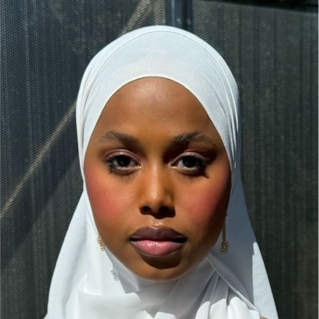

Ben Friedl
I'm Ben Friedl, a Computer Sciences and Information Science major at UW Madison. I have a personal site + blog at ben.enterprises. My favorite tech thing is probably my e-reader, which allows me to quickly start reading new books.

Hani Sulieman
TODO

Tristan Rivas
My name is Tristan Rivas, Information Science Major, and cat owner. I enjoy game development and reading about new tech developments. My favorite tech thing is the concept of open-source, especially GODOT godot.MIT